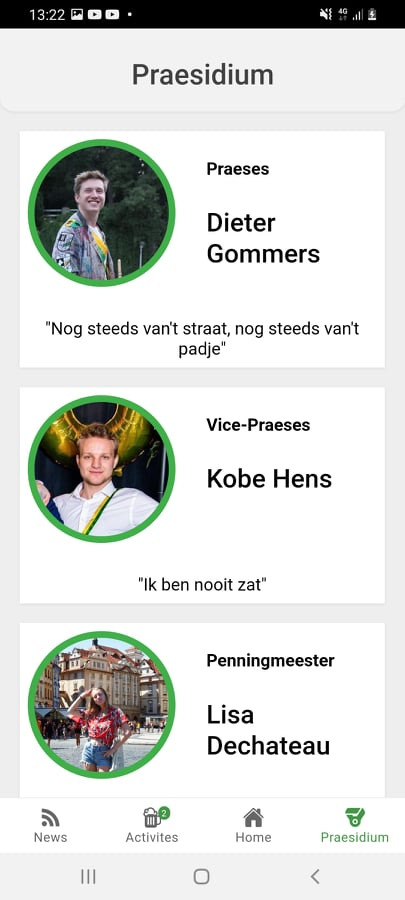
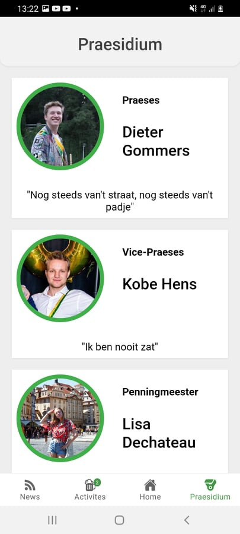

De Parkwacht
Angular
Ionic
Redux
This app was made for the student organisation "De Parkwacht". The app shows the upcomming and past activities as well as news messages.
The app needed to be cross platform. Ionic was user to wrap the angular project. This allows us to build the app to both an iOS and Android application.
Pictures
 



Made by Jordy Van Kerkvoorde - © 2021